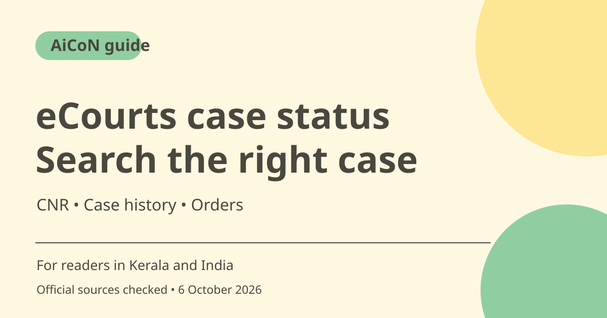

eCourts case status: search CNR and verify case details
eCourts Services lets you search a court case with a 16-character alphanumeric CNR number or other case details. Check the court, parties and registration year before relying on a match. Online status is information, not legal advice or a promise about a hearing.

What is eCourts Services?
The official portal offers case-status and history searches. Its CNR help asks for 16 alphanumeric characters without spaces or hyphens. If you do not know the CNR, it offers alternatives such as registration number, party name and advocate name. Use the official service rather than a stranger's promise to fix a court record.
Which court route should you use?
District-court services and High Court services have distinct official interfaces. The High Court portal asks you to select the High Court and bench, then the search criteria. For a Kerala case, choose the actual court shown on your papers. Do not assume a result from another state or bench belongs to you simply because a party name matches.
Who is it useful for?
A litigant or family member can use the service to understand the recorded case history and available orders. An advocate can help interpret the legal significance. Public access does not justify reposting private allegations or identifying a person as guilty. Case parties may include petitioners, respondents, complainants or accused persons, so the context matters.
Searching without CNR
The official help describes searches by case registration number, filing number, party, advocate, FIR, Act or case type depending on the interface. Party-name searches may return multiple cases. Use the registration year, court and both parties to identify a match. Pending and disposed are search categories, not a full explanation of the outcome.
Cause lists and orders are separate
The High Court service gives cause-list searches by court or date and orders/judgments by available criteria. A cause list is not the same as a final judgment or a guarantee that a matter will be taken up at a particular time. Read the dated order itself and ask the advocate about any required action.
Check before acting on a status
Online records can be misunderstood when the year, court or case number is wrong. Keep the CNR and original case papers together. Do not miss a legal obligation because one search fails or because a summary looks final. Confirm important dates and procedural requirements with the court or your advocate.
How to use it, step by step
- Open services.ecourts.gov.in directly. For a High Court matter, use the official High Court service linked in the sources.
- If you have the CNR, enter its 16 alphanumeric characters without spaces or hyphens.
- Complete the displayed captcha and select Search. The portal also offers an audio captcha route on the checked page.
- Check the case details against your papers, including court, parties, case number and year, before reading status and history as your case.
- If the CNR is unknown, open Case Status and choose an alternative search. Provide the required court, year and criteria, then identify the correct result.
- Open available history and orders. For High Court cause lists, select the relevant court or date as instructed by that interface.
- Save the reference privately and verify important hearing dates or required action with your advocate or court. Do not pay an agent to alter the online status.
Cost, eligibility and limits
| Public information | The checked portal provides official search routes. No private paid agent is required to read the search instructions. |
|---|---|
| Search requirements | CNR or sufficient case details, plus captcha where displayed. An example CNR on the page is not your case number. |
| Court scope | Use the correct district-court or High Court interface. This guide does not promise every court record or order is available. |
| Legal limits | Status is not legal advice, certified-copy advice or a guarantee of hearing time. Verify consequential action through the proper court or advocate. |
Frequently asked questions
Is CNR made only of numbers?
No. The official page describes a 16-character alphanumeric identifier, entered without spaces or hyphens.
Can I search without CNR?
Yes. Available alternatives include case registration number, party or advocate details, with other fields depending on the interface.
Does a matching name prove it is my case?
No. Compare court, year, case number and parties with the original papers.
Official sources
Checked 6 October 2026. Features and prices can change. This is a guide, not a personal product test.